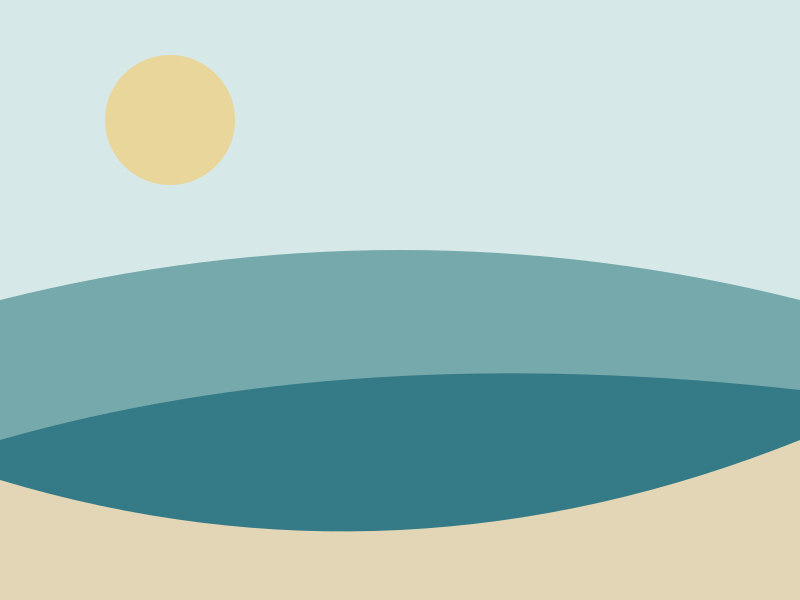

Zoom on scroll
ScrollTrigger boundaries, from/to values, overflow crop and refresh behavior.
Scroll past the illustration to move from a wide frame to a closer crop.

A controlled zoom.
The image stays inside its frame. Reduced motion retains the full, static composition.
Static illustration available.